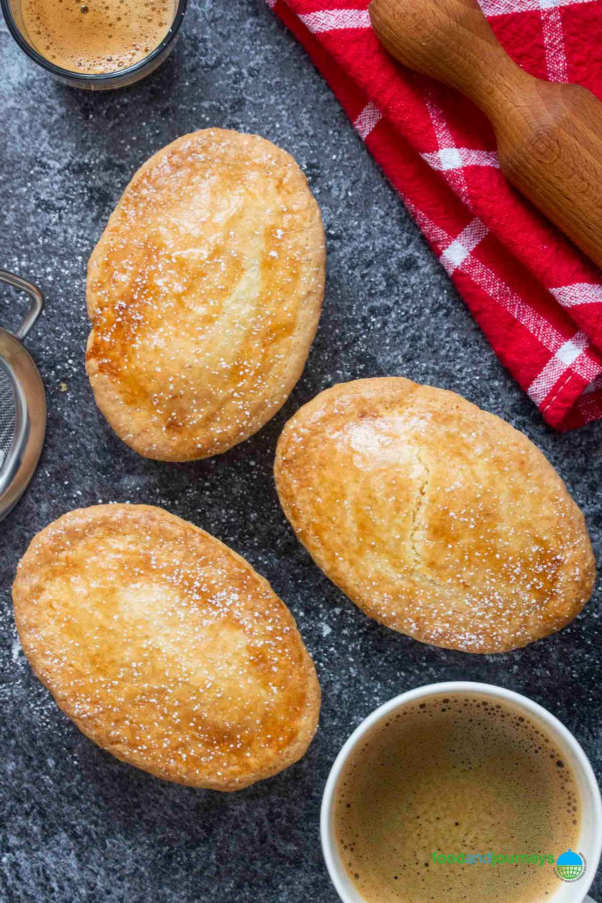

Pasticiotto Recipe
Ingredients
- Eggs – at room temperature.
- Cornstarch – in case you can’t find any cornstarch, potato flour is a good substitute.
- Sugar – regular white sugar.
- Lemon – you would only be using the lemon zest for the cream
- Milk – regular full-cream milk is preferred.
- Pastry dough – if you already have a favorite recipe for making pastry dough, feel free to use that.
Instructions
- Start by preparing your pastry/muffin tins by greasing them with butter and a dust of flour.
- Prepare the Italian pastry cream by heating milk on a small or medium-sized saucepan, placed over medium heat
- While waiting for the milk, combine egg yolk, sugar, cornstarch, and lemon zest in a medium mixing bowl — use a whisk to mix
- Slowly pour the heated milk on the egg mixture while constantly whisking the mixture. Do not pour the milk all at once, or you might end up cooking the eggs instead of making pastry cream.
- Pour the pastry cream back into the saucepan and bring to a slow boil and until it has thickened to your desired consistency
- Set pastry cream aside to cool.
- Preheat up the oven to 180°C (350°F).
- Start rolling the pastry dough and place them on your pastry/muffin tins. Leave some pastry dough hanging out on the tins’ side; you will be using this part later for sealing the pastry
- Prepare (cut out) the pastry dough for covering the top of each tin as well.
- Use a spoon to add pastry cream to each tin. Try not to put more than the top of the tin
- Cover each tin with the rest of the prepared pastry dough. Fold the top pastry under the lower pastry to seal the sides and ensure that no cream will seep through
- Brush top with egg whites.
- Place in the oven for twenty to twenty-five minutes or until they turned golden.
- Serve — enjoy your pasticciotto Leccese with a dusting of powdered sugar, if desired.
Main Page